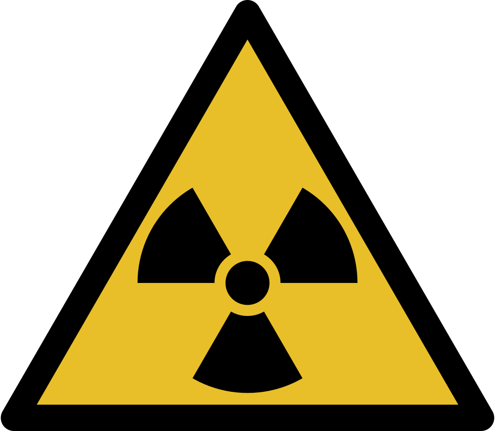

Le monde des pierres
les pierres est un vaste monde d'atomes

l'autunite est une pierres RADIOACTIVE qui est entre vert et jaune fluo
l'amethyste est une pierres CONNUES elle est violet et fais partie de la famille du quartz
la pyrite ressemble a de l'or,elle a PLUSIEURS VARIANTES
la magnétite est une pierre tout noir elle est NATURELLMENT MAGNETIQUES